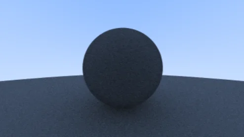
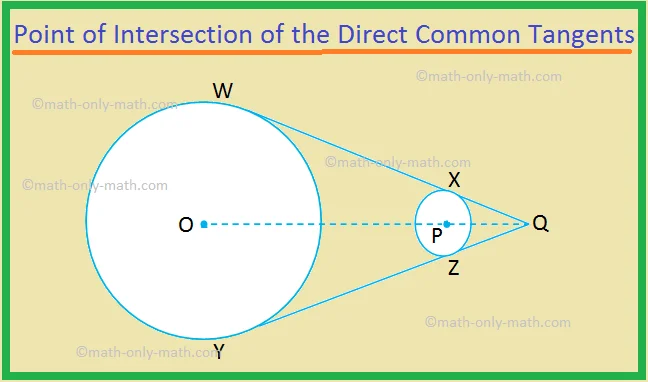
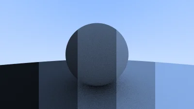

Raytracing in one weekend in C++
GitHub Repository
Welcome to my adventure following the raytracing in one weekend series in C++.
Part 6
Diffuse Material
Colors !!!!
First what is a "Diffuse Material"
A diffuse surface takes in a ray of light and makes it bounce in random directions.
It also absorbs light depending on its color. The darker the material, the more light it absorbs.

img. Source
We need some vector3 Utilities
Vector3.h
double SquaredLength() const
{
return x * x + y * y + z * z;
}
static Vector3 Random()
{
return Vector3(RandomDouble(), RandomDouble(), RandomDouble());
}
static Vector3 Random(double min, double max)
{
return Vector3(RandomDouble(min, max), RandomDouble(min, max), RandomDouble(min, max));
}
};
...
inline Vector3 Unit(const Vector3& vector)
{
return vector / vector.Length();
}
inline Position RandomInUnitSphere()
{
while(true)
{
Position position = Vector3::Random(-1, 1);
if(position.SquaredLength() < 1) return position;
}
}
inline Vector3 RandomUnitVector()
{
return Unit(RandomInUnitSphere());
}
inline Vector3 RandomOnHemisphere(const Vector3& normal)
{
Vector3 onUnitSphere = RandomUnitVector();
// If in the same hemisphere as the normal
if(Dot(onUnitSphere, normal) > 0.0)
{
return onUnitSphere;
}
return -onUnitSphere;
}
Using the "RandomOnHemisphere"
We now use the "RandomOnHemisphere" function to find a bouncing direction for our diffuse material.
Camera.cpp
Color Camera::RayColor(const Ray& rRay, const Hittable& rWorld) const
{
HitInfo hitInfo;
if (rWorld.Hit(rRay, Interval(0, infinity), hitInfo)) {
Vector3 direction = RandomOnHemisphere(hitInfo.normal);
return 0.5 * RayColor(Ray(hitInfo.coordinates, direction), rWorld); // Recursion
}
Vector3 unitDirection = Unit(rRay.GetDirection());
double blue = 0.5 * (unitDirection.y + 1.0);
return (1.0 - blue) * Color(1.0, 1.0, 1.0) + blue * Color (0.5, 0.7, 1.0);
}
Test it out, it should be a bit grainy but your material should look like this
img. Source
Very nice
limit child
To limit the recursion of the "RayColor" function calling itself an unpredictable number of times,
we add a limit to the number of times a ray coming from the Camera can bounce.
This is done by using a counter that decreases itself each time a bounce happens and that stops the loop when it reaches 0.
Adding maximum bounces
Camera.h
class Camera
{
public:
Camera() = default;
Camera(double imageWidth, double ratio, int samplePerPixel = 10, int bounces = 10): // here
aspectRatio(ratio), width(imageWidth), sampleCount(samplePerPixel), maxBounces(bounces){} // here too
void Render(const Hittable& rWorld);
private:
int height;
double aspectRatio, width;
int sampleCount;
int maxBounces; // Here
Position center, originPixelLocation;
Vector3 pixelDeltaX, pixelDeltaY;
void Initialize();
Color RayColor(const Ray& rRay, int bouncesLeft, const Hittable& rWorld) const; // and here
Ray GetRay(int x, int y) const;
Vector3 PixelSampleSquared() const;
};
Camera.cpp
void Camera::Render(const Hittable& rWorld)
{
...
for(int sample = 0; sample < sampleCount; sample ++)
{
Ray ray = GetRay(x, y);
pixel += RayColor(ray, maxBounces, rWorld);
}
...
}
...
Color Camera::RayColor(const Ray& rRay, int bouncesLeft, const Hittable& rWorld) const
{
HitInfo hitInfo;
if(bouncesLeft <= 0) return Color(0, 0, 0);
if (rWorld.Hit(rRay, Interval(0, infinity), hitInfo)) {
Vector3 direction = RandomOnHemisphere(hitInfo.normal);
return 0.5 * RayColor(Ray(hitInfo.coordinates, direction), bouncesLeft-1, rWorld);
}
...
}
Adding sampling count
Raytracing.cpp
#include "Camera.h"
#include "HittableCollection.h"
#include "Sphere.h"
using namespace std;
int main(int argc, char* argv[])
{
// World
HittableCollection world;
world.Add(make_shared<Sphere>(Position(0, 0, -1), 0.5));
world.Add(make_shared<Sphere>(Position(0, -100.5, -1), 100));
Camera camera(400, 16.0/9.0, 100, 50);
camera.Render(world);
return 0;
}
Fix for shadows
Because of floating point approximations, it is possible that the origin of the bouncing ray happens right below the surface which may cause it to bounce back on the same surface it was emitted from.
A simple fix is to set the valid interval ever so slightly above 0 (like 0.001).
Camera.cpp
Color Camera::RayColor(const Ray& rRay, int bouncesLeft, const Hittable& rWorld) const
{
HitInfo hitInfo;
if(bouncesLeft <= 0) return Color(0, 0, 0);
if (rWorld.Hit(rRay, Interval(0.001, infinity), hitInfo)) { // Hi
Vector3 direction = RandomOnHemisphere(hitInfo.normal);
return 0.5 * RayColor(Ray(hitInfo.coordinates, direction), bouncesLeft-1, rWorld);
}
Vector3 unitDirection = Unit(rRay.GetDirection());
double blue = 0.5 * (unitDirection.y + 1.0);
return (1.0 - blue) * Color(1.0, 1.0, 1.0) + blue * Color (0.5, 0.7, 1.0);
}
The image should be brighter (color)
true Lambertian reflection
A better way to represent a more accurate diffuse, that is not evenly distributed across the hemisphere, we can use "Lambertian Reflection".
This distribution is proportional to the cosine of φ (phi) where φ is the angle between the reflected ray and the surface normal.
This way the direction of the bouncing ray is still random, but has more chances to bounce in the direction of the normal in a nice curve.

img. Source
But How ?
We can create this distribution by adding a random unit vector to the normal vector.
If we take P as the point of intersection and n as the normal of the surface, we have a surface with 2 sides, that means only two unique unit sphere tangents
img. Source
One sphere will be displaced in the direction of the surface normal, and one sphere will be displaced in the opposite direction(-n).
This leaves us two spheres that will only just be touching at the intersection point P.
One of the sphere has a center of (n + P) and the other has one of (P - n).
The first is considered outside surface and the second inside surface.
We want to select the tangent unit sphere that is on the same side as the surface of the ray origin.
Pick a random point S on this unit radius sphere and send a ray from the hit point P to the random point S.
This is the vector S - P.
Let's add the Lambertian Reflection
Camera.cpp
Color Camera::RayColor(const Ray& rRay, int bouncesLeft, const Hittable& rWorld) const
{
HitInfo hitInfo;
if(bouncesLeft <= 0) return Color(0, 0, 0);
if (rWorld.Hit(rRay, Interval(0.001, infinity), hitInfo)) {
Vector3 direction = hitInfo.normal + RandomUnitVector();
return 0.5 * RayColor(Ray(hitInfo.coordinates, direction), bouncesLeft-1, rWorld);
}
Vector3 unitDirection = Unit(rRay.GetDirection());
double blue = 0.5 * (unitDirection.y + 1.0);
return (1.0 - blue) * Color(1.0, 1.0, 1.0) + blue * Color (0.5, 0.7, 1.0);
}
You should notice more pronounced shadows and a slight blue tint from the sky reflection on the spheres.
This is due to less uniform scattering. For the shadows, more light bounces straight up so the area below the sphere is darker and less light bounces towards the camera.
Gamma Correction
Camera.cpp
Color Camera::RayColor(const Ray& rRay, int bouncesLeft, const Hittable& rWorld) const
{
HitInfo hitInfo;
if(bouncesLeft <= 0) return Color(0, 0, 0);
if (rWorld.Hit(rRay, Interval(0.001, infinity), hitInfo)) {
Vector3 direction = hitInfo.normal + RandomUnitVector();
return 0.9 * RayColor(Ray(hitInfo.coordinates, direction), bouncesLeft-1, rWorld); // The "0.9" is the Reflectance Factor
}
Vector3 unitDirection = Unit(rRay.GetDirection());
double blue = 0.5 * (unitDirection.y + 1.0);
return (1.0 - blue) * Color(1.0, 1.0, 1.0) + blue * Color (0.5, 0.7, 1.0);
}
Result :
Play around with Reflectance
img. Source
Color.h
inline double LinearToGamma(double linearComponent)
{
return sqrt(linearComponent);
}
inline void WriteColor(std::ostream &out, Color pixel, int sampleCount)
{
double scale = 1.0 / sampleCount;
double r = LinearToGamma(pixel.x * scale);
double g = LinearToGamma(pixel.y * scale);
double b = LinearToGamma(pixel.z * scale);
// Write the translated [0,255] value of each color component.
static const Interval intensity(0.000, 0.999);
out << static_cast<int>(255.999 * intensity.Clamp(r)) << ' '
<< static_cast<int>(255.999 * intensity.Clamp(g)) << ' '
<< static_cast<int>(255.999 * intensity.Clamp(b)) << '\n';
}